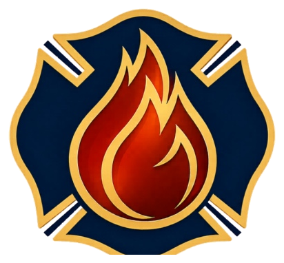

The 1884 Fund
Help launch emergency relief.
Fund launch
The 1884 Fund
Help prepare donor packets, thank-you calls, outreach lists, launch-event logistics, and follow-up for founding supporters and legacy donors.

Round Rock Fire FoundationVolunteer · Just a year old · Est. 2025
RRFF is just a year old. Volunteers can help us launch The 1884 Fund, prepare family-support events, organize donor outreach, and turn personal care into reliable systems families can find when timing is hard.
Where volunteers help
Some people give money. Some give time, lists, logistics, food, hospitality, or professional skill. All of it helps build lasting care.
The 1884 Fund
Help launch emergency relief.
Fund launch
Help prepare donor packets, thank-you calls, outreach lists, launch-event logistics, and follow-up for founding supporters and legacy donors.
Events
Assist with setup, check-in, hospitality, sponsor tables, family activities, cleanup, and the behind-the-scenes details that make gatherings feel cared for.
Operations
Help maintain contact lists, send acknowledgments, organize documents, prepare mailings, and keep early-stage projects moving.
Volunteer roles
Setup, guest welcome, registration, hospitality, and cleanup for donor and family events.
Help identify legacy donor prospects, prepare notes, make thank-you calls, and support thoughtful follow-up that feels personal, not transactional.
Spreadsheet cleanup, mailing lists, sponsor tracking, document organization, and volunteer coordination.
Grant writing, photography you own and can license to RRFF, legal/accounting support, design, and fundraising strategy.
Volunteer interest
Send a short note with your name, email, and where you’d like to help — event crew, donor outreach, admin, or a professional skill — and someone from RRFF will follow up directly.
Email RRFF to volunteerGoes to legacy@roundrockfirefoundation.org. A volunteer intake form will replace this email step as the Foundation grows.
Every early contribution helps RRFF launch The 1884 Fund with care and credibility.